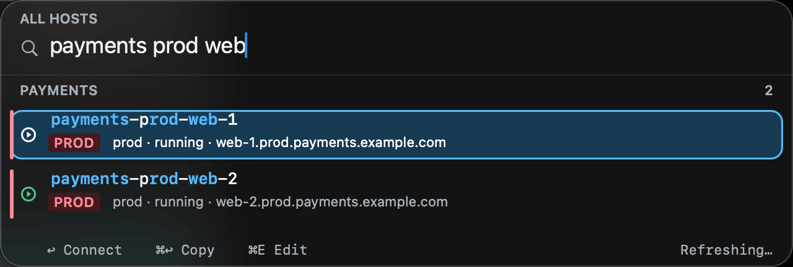
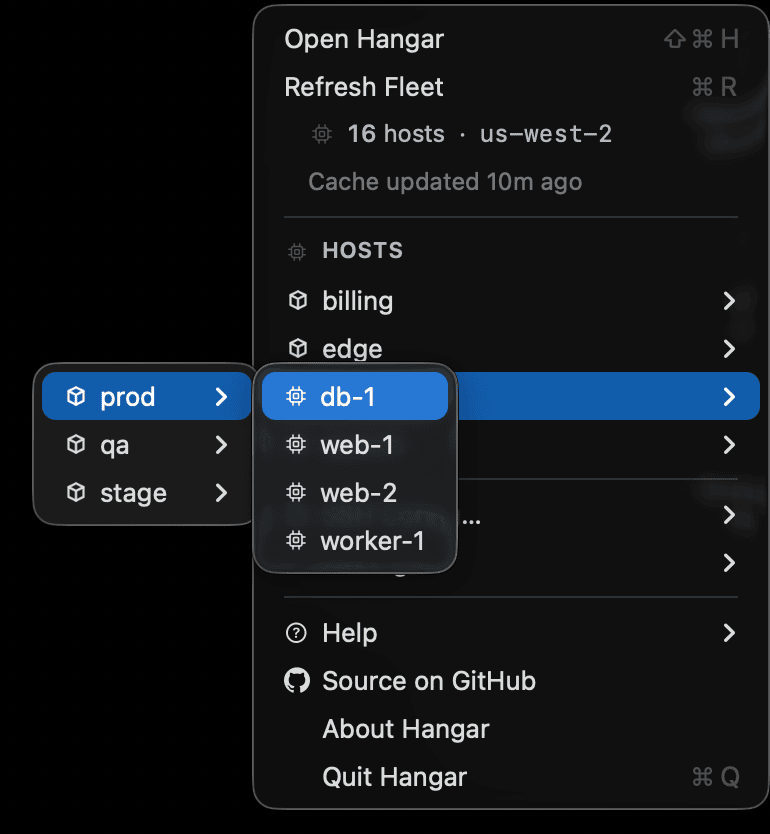
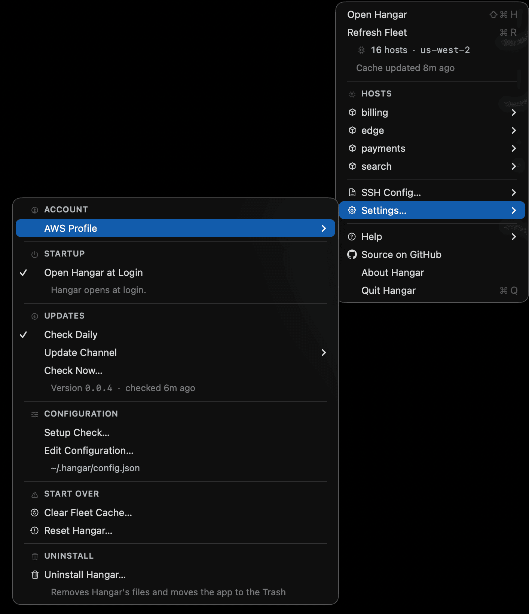
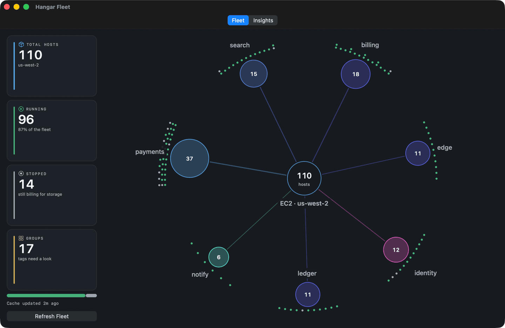
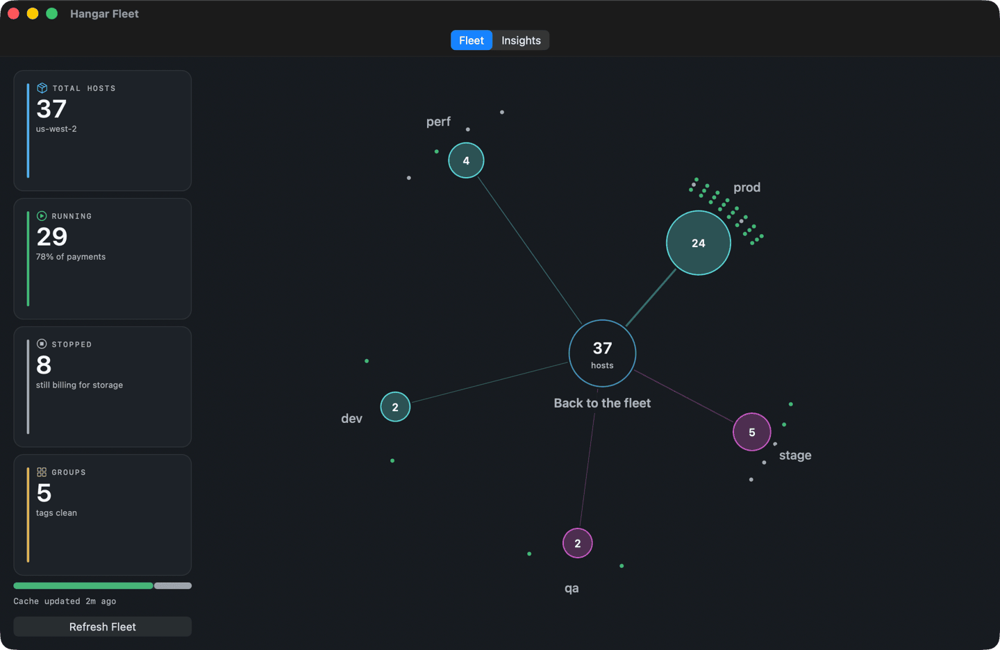
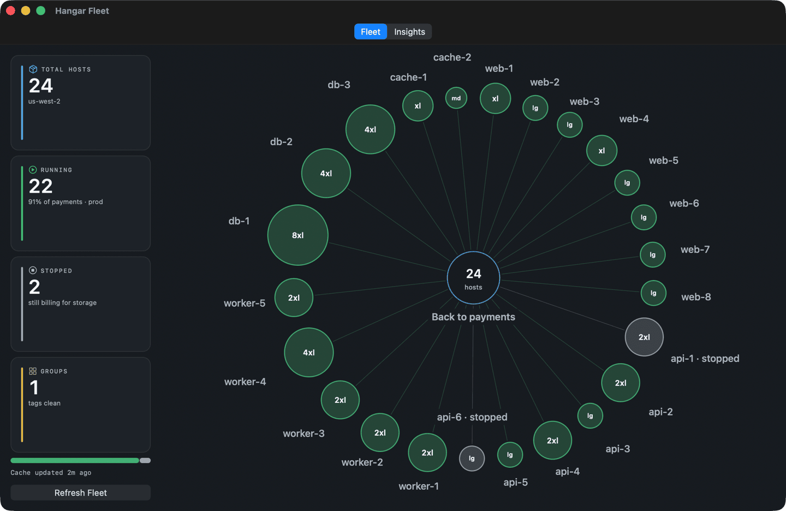
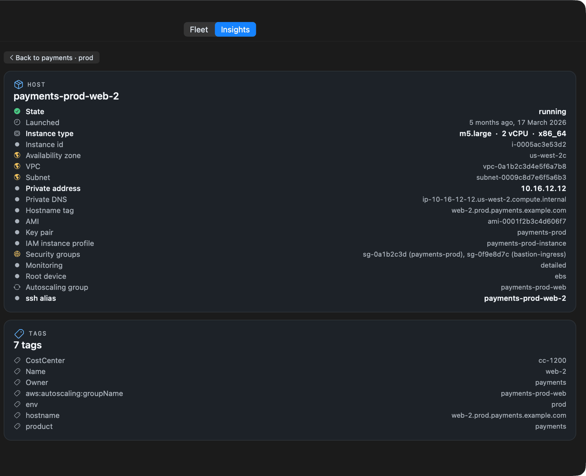
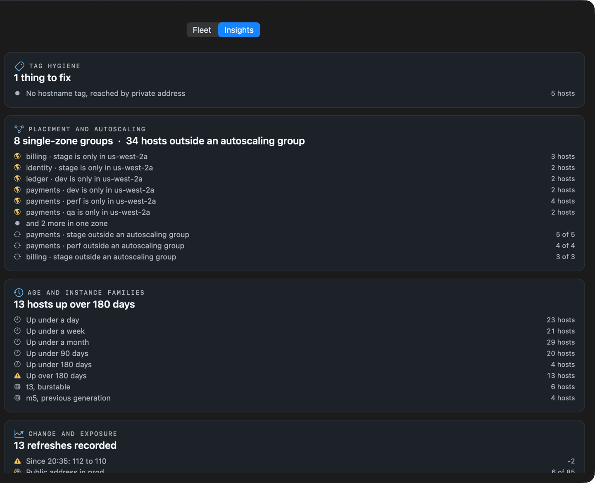

Fuzzy fleet search
Terms match in any order across alias, hostname and tags. Type the three things you remember.
query pay prod web
match payments-prod-web-1
from 2,847 hosts in 2.8 ms
NATIVE macOS · SIGNED AND NOTARIZED
Hangar reads the hosts already in your ssh config, takes a CSV of any others, and turns an EC2 fleet that will not sit still into aliases that maintain themselves. Press ⌘⇧H, find the host, and connect.
macOS 14+ · No server · No account · No AWS permission required
An illustration of the floating panel: typing payments prod web
narrows 2,847 hosts to three.
Hangar gathers hosts from four places and merges them. Every one is on by default, because a source that finds nothing costs nothing.
Nothing to set up.
~/.ssh/config on first launch
every Host block, and the files it IncludesOne drag.
alias or hostname is enough
user, port, product, env and role if you have themWhere it gets interesting.
ec2:DescribeInstances
If an ssh agent is holding your key, Hangar finds it and uses it.
1Password, Secretive and anything on SSH_AUTH_SOCK go
through the same path. There is no CLI to install and nothing to
configure.
Three lines, per host.
IdentityFile names the public key. With
IdentitiesOnly that is how ssh is told which of the
agent's keys to offer, so a vault holding a dozen of them does not run
past MaxAuthTries and fail on a host that would have
worked.
The vault signs; nothing is read.
Hangar never reads, exports or stores a private key. It asks the agent
what it holds the way ssh does, over the agent socket. The only thing
it writes is the public half, under ~/.hangar/keys.
A hand-kept ssh config goes stale and an autoscaling group replaces the hostname you saved. Either way the lookup is the work, and you do it again every time. Search stays under half a millisecond per keystroke at ten thousand hosts.
Every single time.
aws ec2 describe-instances --filters …
then read JSON to find the one you wantssh ec2-user@… and hope the login is rightFour seconds, from any app.
payments prod web
terms match in any orderStandard SSH underneath. Nothing to learn, nothing to migrate.
Terms match in any order across alias, hostname and tags. Type the three things you remember.
Hangar owns one ssh_config include and rewrites it on every sync, so terminated instances drop out on their own.
Return opens a real session in iTerm2 or Terminal. ⌘↩ copies the command instead.
EC2, Systems Manager, the hosts already in your ssh config, and any CSV you drop on the window. No AWS permission at all is required, and a denied call falls back on its own instead of showing you an error.
If an ssh agent is holding your key, Hangar finds it and uses it. One
key is adopted without asking. No op CLI, and no private
key is ever read, exported or stored.
The same resolution order the AWS CLI uses, read straight from your
home directory, with the signing done here. Expired SSO tokens refresh
in place, so the CLI is only needed for the first
aws sso login on a machine.
⌘-click a host to set its user or key. Detect Login probes the usual cloud images and keeps the one that authenticates.
The setup screen shows what each grouping level makes where it sits, before you commit to it. A tag most of the fleet does not carry is a poor level, and it says so rather than letting you find out.
The menubar aircraft turns green while the cache is fresh, and says so when it is not.
Screenshots from a running Hangar. The fleet in them is fictional, so no real hostname of anyone's is on this page.



~/.ssh/config.
Hangar lists your instances once and keeps the answer. The dashboard is
everything that one response can tell you, so it costs no second API
call and no second permission: ec2:DescribeInstances,
read only, is all Hangar ever asks for.





Hangar writes standard ssh_config. Anything that speaks SSH
picks the aliases up, whether Hangar is running or not.
$ ssh payments-prod-web-1
$ scp deploy.tar.gz payments-prod-web-1:/tmp/
$ rsync -av ./dist/ payments-prod-web-1:/srv/app/Hangar reads what is already on your machine and writes one file. There is no other side to it.
ec2:DescribeInstances call, signed with SigV4.
That is the only IAM permission Hangar asks for, and it works
without one.~/.ssh/config.d/hangar, written at 0600 after ssh
itself validates the syntax.
No Homebrew, no Xcode, no xattr workaround. The app is signed
with a Developer ID certificate and notarized by Apple.
One file, under a megabyte.
It opens without a Gatekeeper warning.
A setup check reads your machine and says what works.
And one step to undo it. Settings → Uninstall Hangar removes
~/.hangar, the aliases it generated, and the Include
line it added to your ~/.ssh/config, then moves the app to the
Trash. Your AWS credentials and the rest of that file are untouched.
macOS 14 or newer · Apple silicon and Intel · MIT licensed
Tag discovery, credential resolution, SSO refresh, the generated ssh_config, configuration, and how a release is cut.
Find the host. Press Return.
Signed and notarized · macOS 14+ · MIT